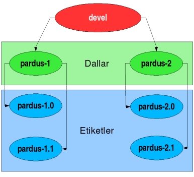
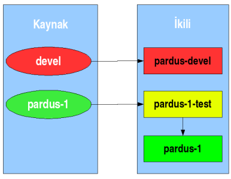

Pardus Depo Politikası
T. Barış Metin
Belge Pardus paket depolarını ve bu depolar üzerinde uyulması gereken kuralları listeler.Belge yalnızca bir kullanım alanına yönelik hazırlanan Pardus işletim sistemi dağıtımı için kuralları tarif eder. Farklı kullanım alanlarına yönelik, farklı Pardus dağıtımları (Pardus, Pardus Sunucu, vb.) bulunabilir. Belgede anlatılan kurallar her Pardus dağıtımı için ayrı ayrı uygulanır.
İçindekiler
- 1 Paket depoları
- 2 Kaynak deposu
- 3 İkili paket depoları
- 4 Depoya yeni bir paket eklenmesi
- 5 Paket geliştiricileri için kurallar
- 6 Belgeye katkıda bulunanlar
1 Paket depoları
Pardus dağıtımının bütünü hazırlanan yazılım paketlerinin bir araya getirilmesi ile oluşturulur. Dağıtıma eklenecek her yazılımın öncelikle Pardus paketi olarak hazırlanması gerekir.Paketlerin hazırlanması ve kullanıma sunulmaları sürecinde iki farklı yapıda paket deposu kullanılır:
- Kaynak paket deposu
- İkili paket depoları
2 Kaynak deposu
Kaynak paket deposu PİSİ kaynak dizinlerinin bulunduğu depodur. Paketler üzerinde yapılan tüm geliştirme kaynak paket deposu üzerinden yürütülür. PİSİ paketleri bu kaynaklar kullanılarak oluşturulur ve ikili depolara yerleştirilir.Pardus içerisinde o sıradaki dağıtım sürümü tarafından kullanılan kaynak depoda aşağıdaki gibi iki ana dal bulunur:
- Kararlı (stable) dallar
- Geliştirme (development) alanı
Kararlı dallar
Genel kullanım için yayınlanmış olan dağıtım sürümlerinin kaynak paketlerini barındıran dallardır.Her ilk (major) sürüm numarası için bir kararlı kaynak dal oluşturulur. Örneğin: Pardus 1.0, 1.1 ve 1.2 sürümleri aynı kararlı kaynak dalı üzerinden ikili paketler oluşturularak hazırlanır.
Kararlı sürümün yayınlanması ile de kaynak depo sürüm numarası ile etiketlenerek (taglanarak) ayrılır. Etiketlenen bu depo üzerinde geliştirme yapılmaz, buradan ikili oluşturulmaz.
Geliştirme alanı
Ana geliştirmenin yapıldığı, yeni özelliklerin ve paketlerin ilk olarak eklendiği alandır.Yeni bir paketin ilk adresi geliştirme alanı olacaktır ve Pardus tarafından dağıtıldığı sürece geliştirme alanında barınmaya devam edecektir. Paket üzerinde yapılan geliştirme ilk bu alana uygulanır, daha sonra kararlı dallara aktarılabilir.
Yeni dağıtım sürümleri yayınlandıkça kararlı olarak işaretlenmiş birden fazla dal olabilmesine karşın, bir kullanım alanına/kullanıcı kitlesine hazırlanan Pardus sürümü için yalnızca bir tane geliştirme alanı bulunur.
2.1 Kaynak paketler için genel işleyiş
Kaynak paket deposu subversion sürüm kontrol sistemi üzerinde barındırılır. Kararlı sürüm oluşturulacağı zaman geliştirme alanı kararlı bir kaynak sistem oluşturmak için dallandırılır (branch) ve hazırlanan yeni dal üzerinde kararlı dağıtım sürümü için paketler hazırlanır.Kaynak paket deposunun sıradüzeni aşağıdaki gibidir.
- /devel
- /stable
- /stable/pardus-1
- /stable/pardus-2
- ...
- /tags
- /tags/pardus-1.0
- /tags/pardus-1.1
- ...
- /tags/pardus-2.0
- ...

Ana geliştirmenin yapıldığı devel alanı kararlı sürümler için dallandırılır. Kararlı sürüm geliştirmeleri bu dallar üzerinde yapılır. Gerekiyorsa geliştirme alanında yapılan iyileştirmeler, depo ve bileşen sorumlularının kontrolünde kararlı dallara aktarılabilir.
Kararlı sürüm alanlarından oluşturulacak sürümün yayınlanması ile kararlı sürüm etiketlenir ve üzerinde bundan sonra değişiklik yapılmayacak bir etiket oluşturulur.
3 İkili paket depoları
İkili paket depoları PİSİ paketlerinin derlenmiş ve kuruluma hazır hallerinin bulunduğu depolardır. Pardus içerisinde o sıradaki dağıtım sürümü tarafından kullanılan üç ikili depo vardır:- Kararlı (stable) depo
- Kararlı depo için test deposu
- Geliştirme (development) deposu
İkinci depo ise kararlı sürüme aktarılmak üzere hazırlanmış olan paketlerin test edildiği depodur. İkili paketler kararlı sürüm deposuna aktarılmadan önce bu test deposuna aktarılır ve test edilmeleri beklenir. Her paket için en az test süresi, depo sorumlusunun insiyatifi saklı tutularak, 2 haftadır. Güvenlik güncellemeleri bu sınırın dışında tutulur.
Geliştirme deposu ise bir sonraki kararlı sürüm için hazırlanmakta olan PİSİ paketlerini içerisinde barındırır.

3.1 İkili depo kuralları
Her depoda yapılacak güncellemelerde programlar arası ilişkilerin bozulmamasına azami önem göstermek gerekmektedir. API ve ABI'ın korunması esas olarak kabul edilir.Kararlı depo üzerinde, yazılımların sürüm güncellemeleri ve depoya yeni bir yazılımın/paketin eklenmesi yalnızca deponun kararlılığını ve işlevini korumak için yapılır. Kararlı sürümde yapılan güncellemelerin amacı yeni özellikleri kararlı sürüme kazandırmak değil, sürümün kararlılığını korumak içindir. Yine de, eklenecek/güncellencek paket ile dağıtımın hedef kitlesine yönelik, yaygın bir kullanımın alanının sorunları gideriliyorsa depo sorumlusunun onayı ile işlem yapılır.
Bir kararlı depo içerisinde her hangi bir paketin yalnızca tek bir sürümü bulunabilir. Eğer yazılımların farklı sürümlerinin depoda bulunması gerekiyorsa bu pakete farklı bir isim verilerek çözülür. Örneğin; gtk1 ve gtk2 paketleri farklı paket isimleri ile depoda bulunmalıdır.
3.2 Depo isimlendirmesi
İkili depolar için aşağıdaki isimler kullanılır.3.2.1 Kararlı depo
Her kararlı sürüm, sürüm adı ve sürümün ilk (major) numarasından oluşan bir depo ismi ile anılır. Örneğin; yayınlanmış olan Pardus 1.0 sürümü için ilk sürüm numarası ``1''dir. Bu durumda ikili deponun adı ``pardus-1'' olacaktır.Aynı ilk sürüm numarasına sahip her yayınlanan sürüm için kararlı depo aynı olacaktır. Yukarıdaki örnekten yola çıkarak 1.0, 1.1, 1.2 depolarının kullanacakları kararlı depo ``pardus-1'' olacaktır.
3.2.2 Kararlı depo için test deposu
Bu depo için, kararlı depo adının sonuna ``-test'' son eki getirilir. pardus-1 kararlı deposu için oluşturulan test deposu ``pardus-1-test'' olarak adlandırılır.3.2.3 Geliştirme deposu
Geliştirme deposu ise bir kullanım alanı için hazırlanan Pardus için her zaman aynı ismi alır. Örneğin; Pardus isimli işletim sistemi dağıtımı için geliştirme deposunun ismi her zaman ``pardus-devel'' olarak isimlendirilecektir. Bu isim, geliştirilmekte olan bir sonraki sürümün numarasından bağımsızdır ve tektir.4 Depoya yeni bir paket eklenmesi
Paket depolarına yeni bir paket eklemek için bazı şartların yerine getirilmiş olması gerekmektedir. İki farklı depo (kararlı ve geliştirme) için farklı kurallar söz konusudur. Temel kural olarak yeni bir paketin her zaman ilk önce geliştirme deposuna eklenir.Geliştirme deposuna eklenen paket kaynağının paketin geliştiricisi tarafından denenmiş olması gerekir. Derlenmeyen ve/veya kurulamayan paket depoya eklenmez. Geliştirme deposuna eklenen paketin kararlılığı ve dağıtıma uygunluğu kontrol edilir, sorunları giderilir, paket kararlı depoya eklenmek için hazırlanır.
Depoya eklenen paketlerin bilinen bir güvenlik açığı olmamalıdır. Varsa, ilgili güvenlik açığını gideren yaması ile birlikte eklenmelidir.
Sorunların giderilmesi bölümünde dikkate alınabilecek bir sorunlar listesi aşağıda listelenmiştir. Paket sorunları ve yazılım sorunları ve paketlenen yazılım sorunları iki ayrı madde ile anlatılır.
-
Paket sorunları:
- Oluşturulan ikili paketler fazla büyük (monolitik). Birden fazla pakete bölünebilir mi?
- Yazılım sorunları:
- Utf-8 uyumsuzlukları
- Türkçe çeviri eksikliği
- Uygulama grafikleri masaüstü ile uyumlu mu?
- Ön tanımlı yapılandırma seçenekleri
- Yazılımın bilinen veya yeni bulunan hataları
- Kullanışlılık sorunları
5 Paket geliştiricileri için kurallar
Paket geliştiricileri subversion üzerinde bulunan kaynak deposu üzerinde çalışırlar. Yazılımların kaynak kodlarından PİSİ paketlerinin oluşturulması için gerekli olan geliştirme, paket geliştiricileri tarafından yürütülür.Paket geliştiricileri 3 farklı sorumluluk grubu ile listelenebilir.
- Depo sorumlusu: Depo sorumluları tüm depodan sorumlu olan ve tüm depo üzerinde işlem yapmaya yetkili kişilerdir.
- Bileşen sorumlusu: PİSİ kaynakları tasarım belgesinde anlatıldığı gibi bir bileşen tanımı yaparlar. Bileşen sorumlusu belirli bir bileşene uyan tüm paketlerden sorumu olan ve bu paketler üzerinde işlem yapma yetkisine sahip geliştiricidir. Örnek bileşenler arasında, system/base, system/devel, dekstop/kde sayılabilir.
- Paket geliştiricisi: Paket geliştiricisi yalnızca sorumluluğunu almış olduğu paketler üzerinde işlem yapma yetkisine sahiptir.
5.1 Genel kurallar
- Kaynak paket deposu üzerinde çalışan geliştiricilerin paket deposu kurallarına ve yayınlanmış bir sürüm zaman planı varsa bu zaman planına uyması gerekir.
- Paket geliştiricileri hazırladıkları PİSİ kaynak dizinlerini oluştururlar, fakat PİSİ kaynaklarının .pisi ikili paketlerine dönüştürülmesi doğrudan paket geliştiricileri tarafından gerçekleştirilmez. Bununla birlikte, geliştiricinin kaynak paketi sisteminde oluşturduğu, test ettiği ve sorunlarından arındırdığı kabul edilir.
- Geliştiriciler üzerinde çalıştıkları kaynak paket deposunun en güncel versiyonu ile çalışmak zorundadırlar. Bu hem kararlı sürümde, hem de geliştirme sürümünde yapılan çalışma için geçerlidir.
- Geliştiriciler depoya gönderdikleri her paketten sorumludurlar, paketin derlenebilir, sorunsuz ve çalışır olduğundan emin olmak zorundadırlar. Paket tüm testleri geçmelidir.
- Eksik veya tamamlanmamış paketler depoya asla gönderilmemelidir. Her paketin pspec.xml, actions.py dosyaları doğru olarak yazılmış olmalı. Yamaları ve ek dosyaları files/ dizini altında bulunmalı. ÇOMAR betikleri ise comar/ dizini içerisinde bulunmalıdır. Paket derlenebiliyor ve kurulabiliyor olmalıdır.
- Geliştirici aynı anda birden fazla paket ile ilgili depoya gönderim yapmamalıdır. Örneğin; bir geliştirici 8 paket üzerinde birden değişiklik yaptı ise, her paket için ayrı ayrı gönderimde bulunmalıdır (yani toplamda 8 ayrı gönderim). Kısaca gönderimler atomik olmalıdır.
- Bir geliştirici bir başka geliştiricinin paketine acil durumlar dışında (güvenlik açığı, geliştiriciye uzun zamandır ulaşamama gibi) müdahale etmemelidir. Bu kural KATEGORİ sorumluluları için ise sorumlu olduğu kategori dışındaki paketleri kapsamaktadır. Bunun yerine ilgili paket ile ilgili düzeltmesini paket sorumlusuna veya KATEGORİ sorumlusuna göndermeli ve sorunun ne olduğunu ve nasıl çözüldüğünü ayrıntılı şekilde tarif etmelidir.
- Depo'ya paket için gerekli yamalar, ek dosyalar veya post/pre betikleri, PSPEC dosyası, actions.py ve ÇOMAR betikleri dışında hiçbir şey konmamalıdır. Paketin kaynak kodu, geliştiricinin fotoğrafı ya da uygulamaya ait ekran görüntüsü de bu kurala dahildir :).
5.2 Paket isimlendirme kuralları
Paket isimlendirmesi ile ilgili kurallar pisi kaynak dizinindeki package_versions.tex belgesinde detaylı olarak anlatılmaktadır. Bu bölümde kısaca bir PİSİ paketinin isimlendirmesi anlatılacaktır. Bu kural serisine uymayan isimlendirmeler hatalı kabul edilir.- Bir pisi paketinin isimlendirme kuralı şu şekilde formülize edilebilir. PAKET-VERSİYON{_sonekNUMARA}-REVİZYON.
- Paket ismi ana geliştiricinin pakete verdiği isimdir, değiştirilemez fakat genişletilebilir (kaynağının paketlenmesi sırasında oluşturulacak bir alt paket gcc-doc olarak isimlendirilebilir)
- Paket versiyonu ana geliştiricinin pakete verdiği sürüm numarasıdır, değiştirilemez. (util-linuz-2.4z, kernel-2.6.9.4, gcc-3.3.6 gibi)
- _sonek ile belirtilen kısım ``alpha'', ``beta'', ``pre'', ``rc'' ve ``p [patch level]'' den biri olabilir. Bunların kendi arasında sıralaması şöyledir; alpha < beta < pre < rc < Son eksiz paket < p. (1.1_alpha1 < 1.1_beta1 < 1.1 < 1.1_p4 )
- Revizyon geliştirici tarafından pakete verilen ve devamlı artan bir sayıdır. Pakete yapılan değişikliklerde bu revizyon numarası her zaman arttırılmalıdır.
6 Belgeye katkıda bulunanlar
- S. Çağlar Onur

Bu web sitesinde bulunan bilgi ve belgelerin, kaynak gösterilmek koşulu ile kullanılması serbesttir.
Pardus markası ve logotipi TÜBİTAK'ın tescilli markasıdır. Kullanım koşulları için Yasal Uyarı bölümünü inceleyiniz.
Pardus hakkında merak ettikleriniz için lütfen yardım sayfasına başvurun.
TÜBİTAK - UEKAE, PK.74 41470, Gebze / Kocaeli.
| Copyright 2007 Ulusal Elektronik ve Kriptoloji Araştırma Enstitüsü. Tüm Hakkı Saklıdır. | Görüşleriniz |